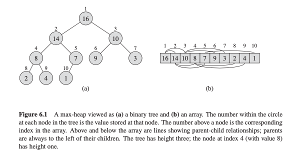

Lecture 8: Binary Heap
Contents
Lecture 8: Binary Heap¶
Trees in Arrays¶
The previous lectures store a binary tree with the help of pointer-liked structures, in which each item contains references to its children.
If the tree is a complete binary tree, there is a useful array-based alternative.
Definition. A binary tree is complete if every level, except possibly the last, is completely filled, and all the leaves on the last level are placed as far to the left as possible.
A complete binary tree is one that can be obtained by filling the nodes starting with the root, and then each next level in turn, always from the left, until one runs out of nodes. Complete binary trees always have minimal height for their size \(n\), namely \(logn\), and are always perfectly balanced.

How to store in an array A?
root is \(A[0]\)
left(i) = \(A[2i+1]\)
right(i) = \(A[2i+2]\)
parent(i) = \(A[floor(\frac{i-1}{2})]\)
Storing a binary tree as an array is not efficient
if the tree is not complete, reserve space in the array for every possible node in the tree
for binary search tree, insertion or deletion will involve shifting large portions of the array
Heaps¶
The (binary) heap data structure is an array object that we can view as a nearly complete binary tree.
Each node of the tree corresponds to an element of the array.
The tree is completely filled on all levels except possibly the lowest, which is filled from the left up to a point
An array A that represents a heap is an object with two attributes:
A.length, which (as usual) gives the number of elements in the array, andA.heap-size, which represents how many elements in the heap are stored within arrayA.Given the index
i, we can easily calculate its parent, left and right child based on the way they are stored.
Max-heap:
max-heap property: for every nodeiexcept the root, \(A[parent(i)] >= A[i]\)max-heapis an array satisfying max-heap property at all nodesMin-heap is symmetric
Heap operations
the height of the tree is \(floor(logn)\). The height for each node \(i\) is \(floor(logn) - floor(log(i+1))\)
max_heapify_down(A, i)-> maintain the max-heap property of theith node in heapAby swaping node with its larger child until max-heap property in \(O(n)\) timecheck whether \(A[i] >= A[j]\) for \(j \in {left(i), right(i)}\)
if not, swap \(A[i]\) with \(A[j]\) for child \(j \in {left(i), right(i)}\) with maximum value and recursively
max_heapify(A, j).python implementation
max_heapify_up(A, i)-> maintain the max-heap property of theith node in heapAby swaping node with its larger child until max-heap property in \(O(n)\) timecheck whether \(A[i] <= A[j]\) for \(j = parent(i)\)
if not, swap \(A[i]\) with \(A[j]\) and recursively
max_heapify_up(A, j).python implementation
build(A)-> build a max-heap from array \(A\)use
max-heapifyin a bottom-up manner to convert array \(A\) into a max-heapiterate from
n/2to0the appendix array A[n/2:n] is at the bottom level (leafs) of a max-heap, and doesn’t need
max_heapify
recursively use
max_heapify_down(A, i)this build takes \(O(n)\) time
if build from a top-down manne using
max_heapify_up(A,i), the time complexity is \(O(nlogn)\) as the bottom of the tree (where most elements align) have to bemax_heapify\(logn\) time for each node.
delete_max(A)-> can only easily delete the last element in a dynamic array, but the max of a max_heap is at the rootnormally it requres \(O(n)\) time by removeing the first element in a dynamic array. can we do it in \(logn\) time?
algorithm
swap the max at root node \(i = 0\) with the last item at node \(n-1\) in heap array, and then delete the last
update heap size by -1
max_heapify(A, 0)after swaping to maintainmax-heap propertyreturn the deleted node
delete(i)can we simply use the
delete()method for binary tree as illustrated in Lecture 6? -> not efficient, because the nodeiwill mostly likely swapped to its predecessor or successor which is still inside the array.dynamic array can easily remove the last element:
swap \(A[i]\) with \(A[n-1]\)
maintain the max-heap property of the heap \(A[:n-1]\) in \(O(logn)\)
HEAPSORT:
heapsort(A):a in-place sorting algorithm that runs in \(O(nlogn)\). note that
merge_sortis also \(O(nlogn)\) but requires additional \(O(n)\) space.algorithm
for i in range(n, -1, 0)
delete_max(A)
Priority Queue¶
one of the most popular applications of a heap: as an efficient
priority queuea priority queue is a data structure for maintaining a set
Sof elements, each with an associated value called a key.when we use a heap to implement a priority queue, therefore, we often need to store a handle (or key) to the corresponding application object in each heap element. The exact makeup of the handle (such as a pointer or an integer) depends on the application. Similarly, we need to store a handle to the corresponding heap element in each application object.
operations
get_max(A)-> get max of a max-heap A in \(O(1)\)return \(A[0]\)
delete_max(A)-> same as a max-heapinsert(A, k)-> insert an item with key \(k\) in the heap A ~ \(O(logn)\)append the item with key \(k\) to the end of the heap: \(A[n+1] = k\)
max_heapify_up(A, n+1)
delete_root()-> To use a binary heap tree as a priority queue, we will regularly need to delete the root, i.e. remove the node with the highest priority.this equals to
delete_max()
delete(A, k)-> delete an item with key \(k\) in the heap A ~ \(O(logn)\)same as the
deletemethod in a max_heap